Smart Phonics
หน้าหลัก
วิดีโอสอน
เล่มสมุดภาพ
คลังคำศัพท์
OPPOSITES
ประกอบด้วยคำศัพท์จำนวน 20 คำ
คลิ๊กที่รูปเพื่อฟังเสียง
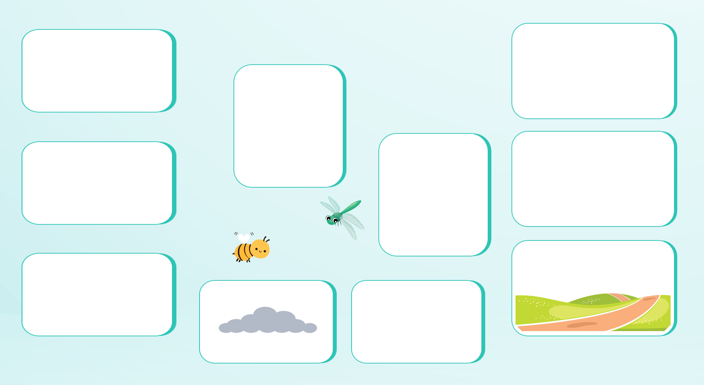
hot
(ฮ่อท)
ร้อน
cold
(โค่ล-ด)
เย็น
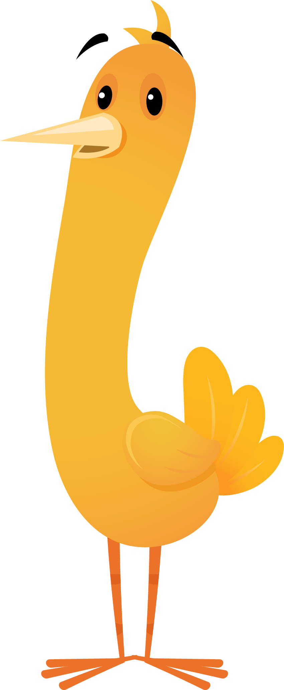
thin
(ธิ่น)
ผอม, บาง
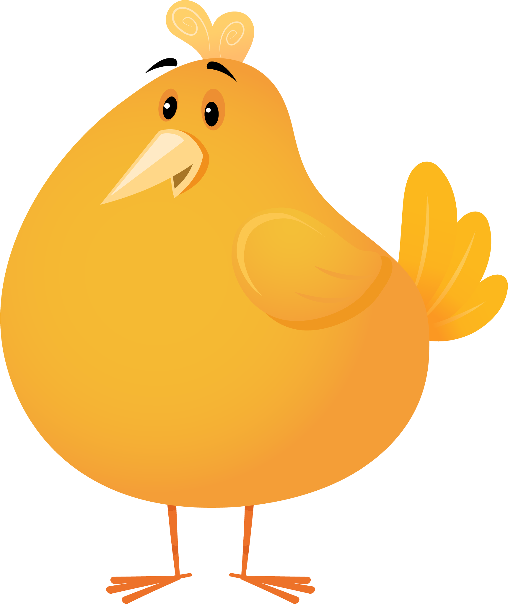
fat
(แฟ่ท)
อ้วน
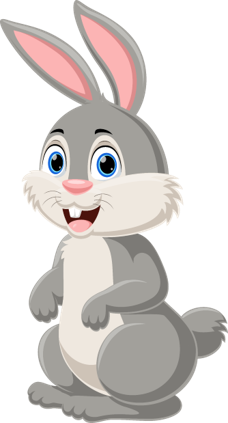
in front
(อิ่น ฟร่อนฺท)
ด้านหน้า
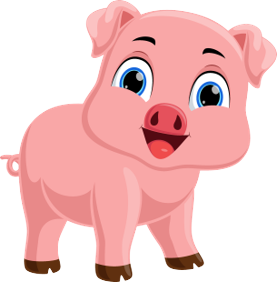
behind
(บิ-ฮ่ายฺน-ด)
ข้างหลัง
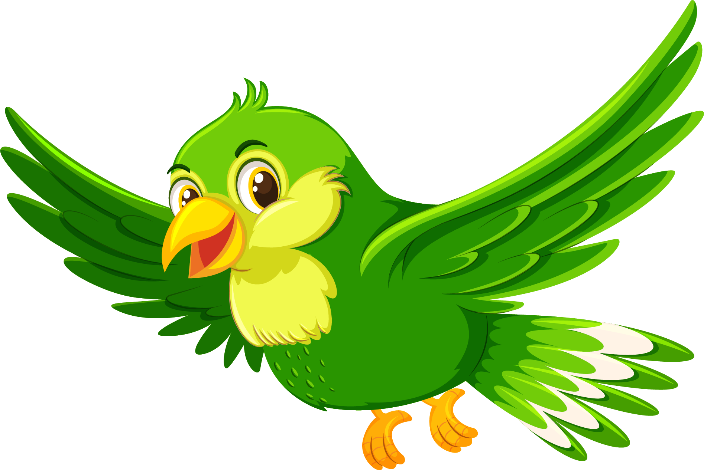
below
(บิ-โล่ว)
ข้างใต้
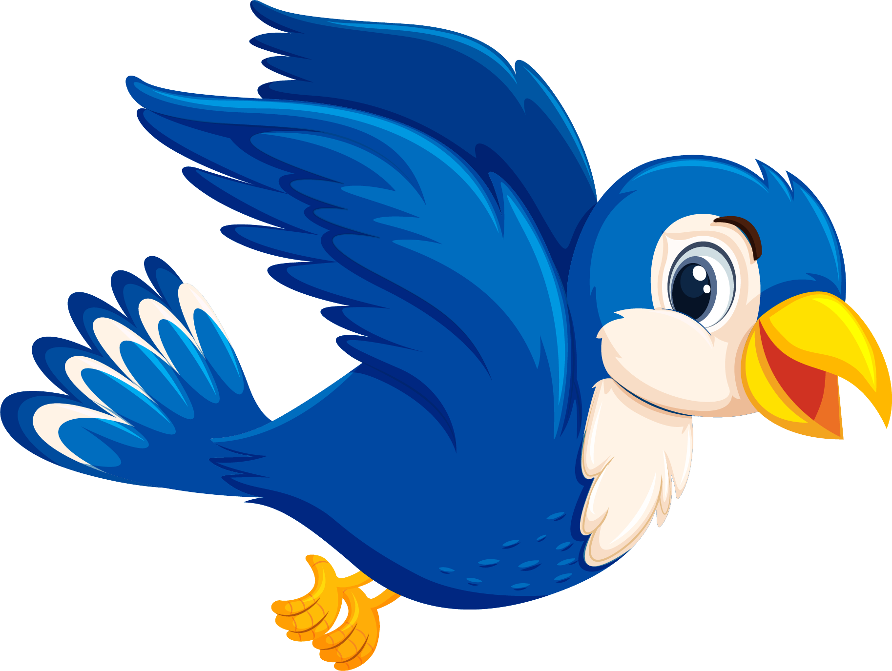
above
(เออะ-บั้ฟ)
เหนือ
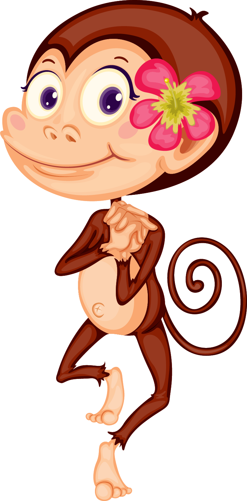
short
(ช่อท)
เตี้ย
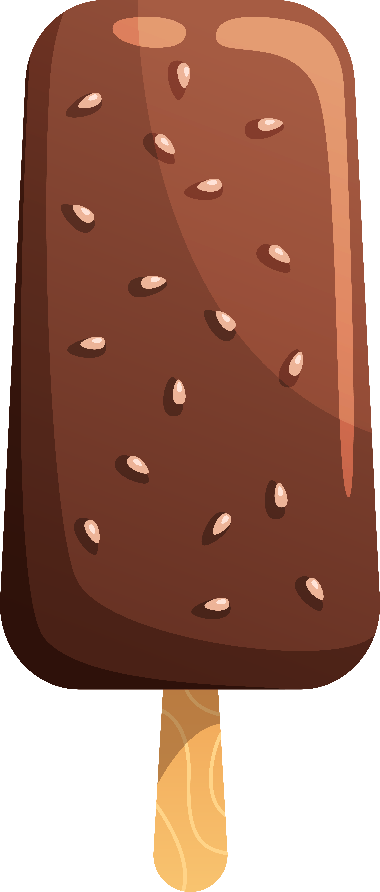
big
(บิ้ก)
ใหญ่
small
(ซม่อลฺ)
เล็ก
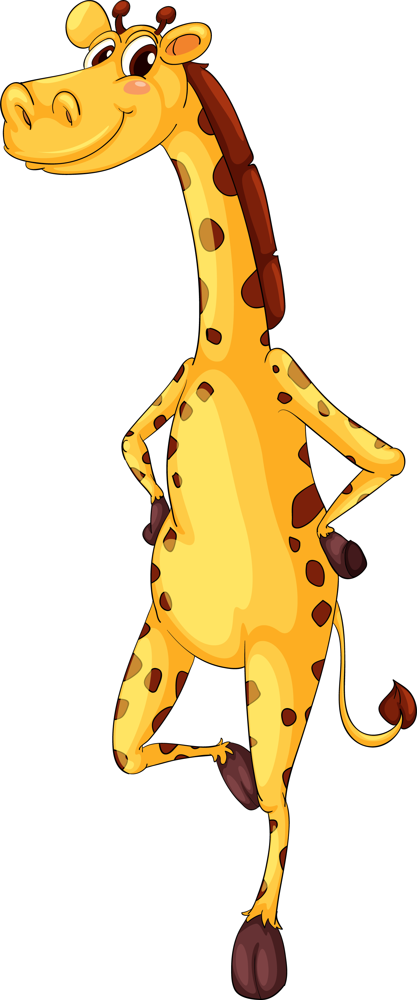
tall
(ท่อล)
สูง
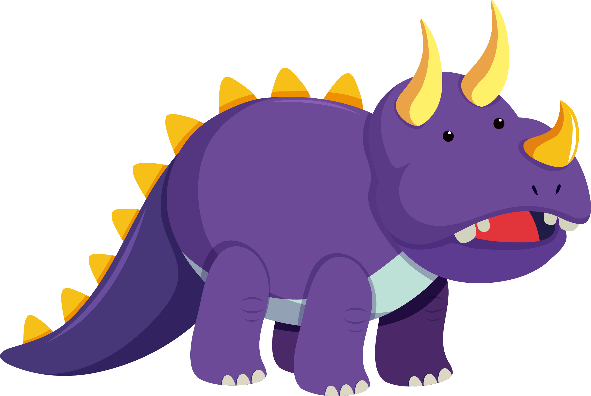
out
(เอ้าท)
ข้างนอก
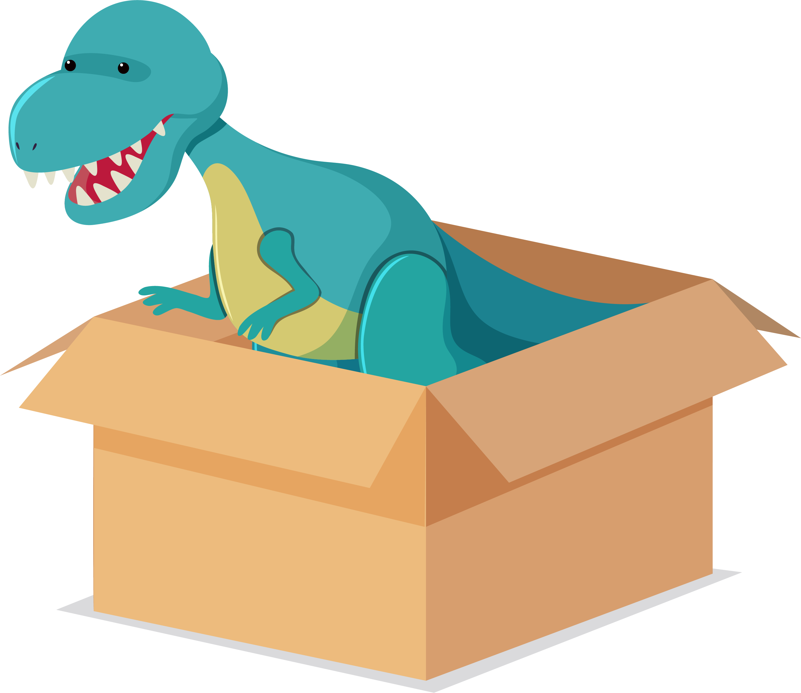
in
(อิ้น)
ข้างใน
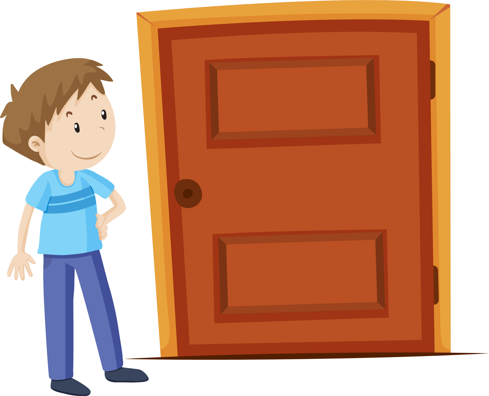
close
(โคล่สฺ-ท)
ปิด
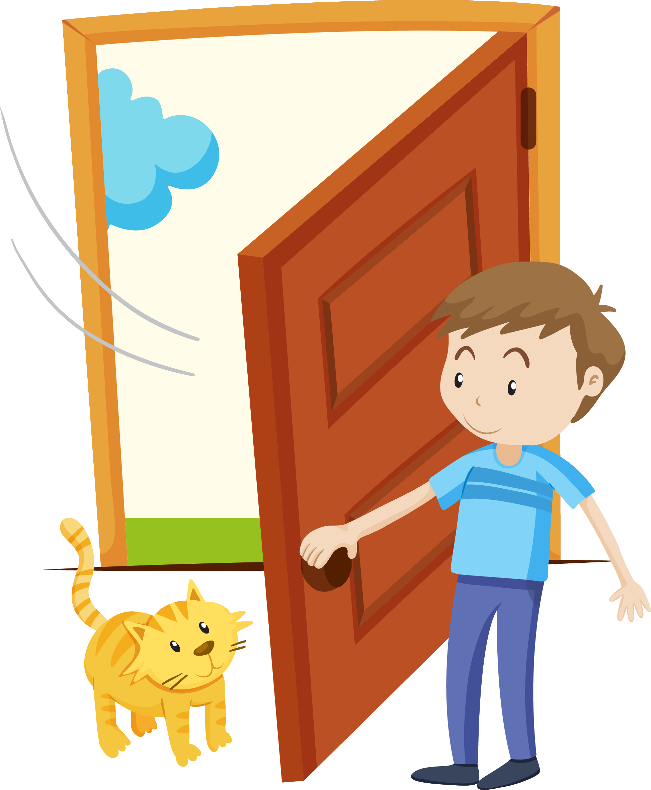
open
(โอ๊-เพ่น)
เปิด
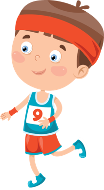
slow
(ซโล่ว)
ช้า
fast
(ฟ่าซฺท)
เร็ว
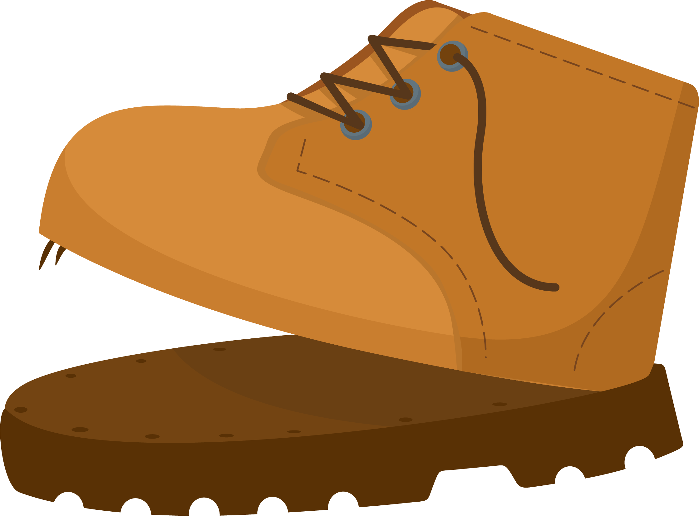
old
(โอ้ลฺด)
เก่า
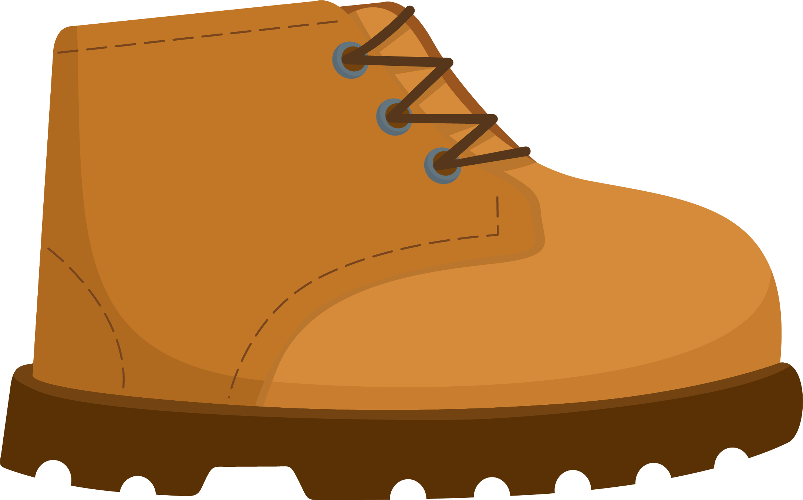
new
(นิ่ว)
ใหม่
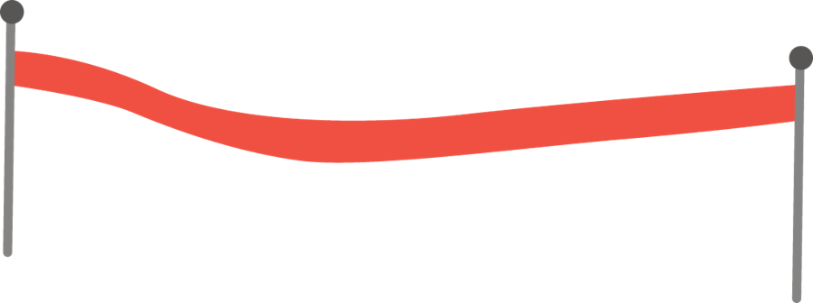
Is the rabbit hiding behind the fence ?
กระต่ายแอบอยู่หลังรั้วใช่ไหมเพื่อน ๆ ?
Can you find a blue bird ?
น้อง ๆ หานกสีน้ำเงินเจอไหมคะ ?